|
Liwei Wang
I am an Assistant Professor in Computer Science and Engineering department at The Chinese University of Hong Kong (CUHK). Before coming to HK, I have worked for more than two years as a Senior Researcher in NLP group of Tencent AI Lab at Bellevue, US.
I graduated with a PhD from Computer Vision group at University of Illinois at Urbana-Champaign, advised by Prof. Svetlana Lazebnik. Here is my Short Bio.
The multimodal Language and Vision ("LaVi") Lab I lead in CSE@CUHK do research in NLP, Computer Vision, and also the intersection of two areas.
Multiple positions are available now in my team: Research Assistants, Interns, and Phd students. Please drop me an email if you want to work with me.
Email /
Google Scholar /
Join LaVi Lab /
LaVi Lab /
|
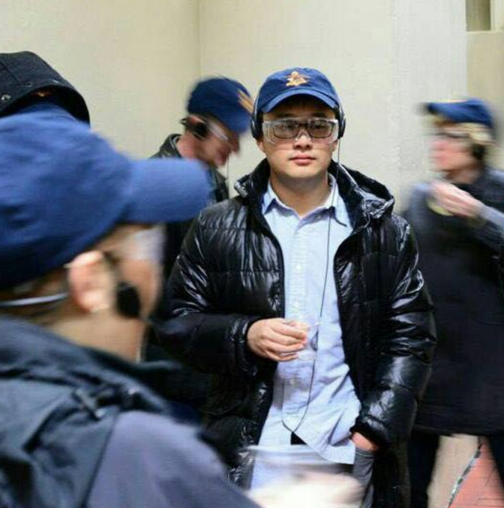
|
News
- 2021/04:
I am joining the Editorial Board of IJCV - top computer vision journal in the world (CCF A journal in AI).
- 2021/04:
I will serve as the program committee of EMNLP 2021.
- 2021/04:
CUHK CSE 2022 Fall Early Admission starts! For Phd/Master applicants, please click .
- 2021/03:
Our work on Logical Reasoning has been accepted by NAACL 2021. Congrats to my intern.
- 2021/03:
Four CVPR 2021 papers are accepted including one oral paper.
- 2020/12:
I joined the CSE@CUHK as an assistant professor and started my team working on Language and Vision ("LaVi" Team).
- 2020/11:
Our "Arrival" team is ranked the 1st among almost 400 teams in 2020 BAAI-JD Multimodal Dialogue Challenge!
- 2020/07:
Two ECCV 2020 papers on vision+language are accepted! Congrats to my interns at Bellevue!
- 2020/06:
I am co-organizing the second Learning from Imperfect Data workshop in CVPR 2020.
- 2020/04:
To generate coherent video paragraphs? Take a look at our ACL 2020 long paper-MART.
|
|
Research Highlights
The goal of my research is to build multi-modal interactive AI systems that can not only understand and recreate the visual world but also communicate like human beings using natural language , which covers topics of joint modeling of images and natural language; natural language generation and multimodal dialogue system; embodied AI; machine learning methods for Computer Vision / NLP.
Works done by my students or interns are indicated by '*'. Click full list
|
|
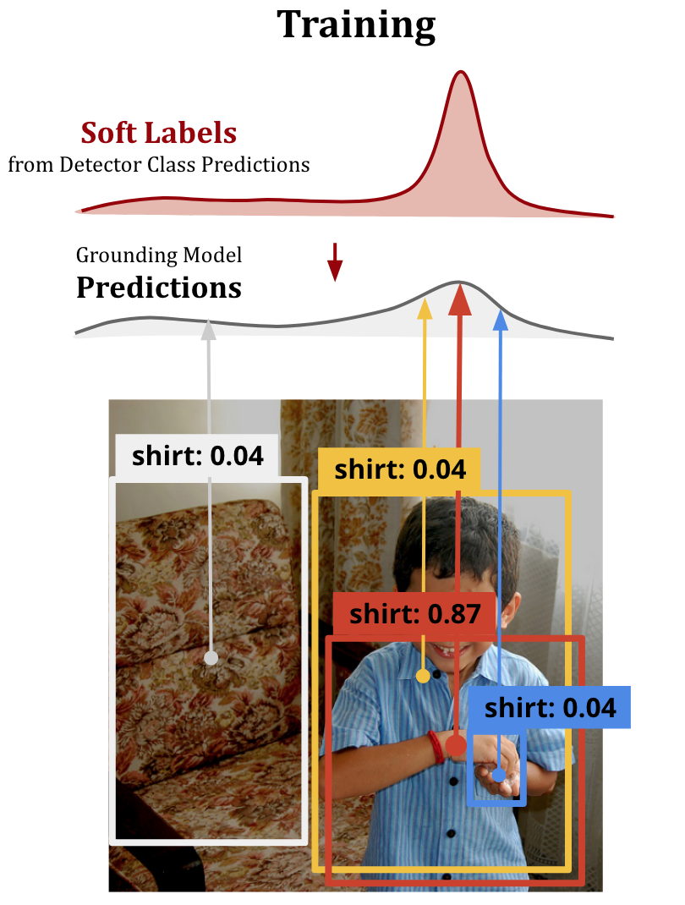
|
Improving Weakly Supervised Visual Grounding by Contrastive Knowledge Distillation
Liwei Wang,
Jing Huang,
Yin Li,
Kun Xu,
Zhengyuan Yang,
Dong Yu
CVPR, 2021 Code
|
|
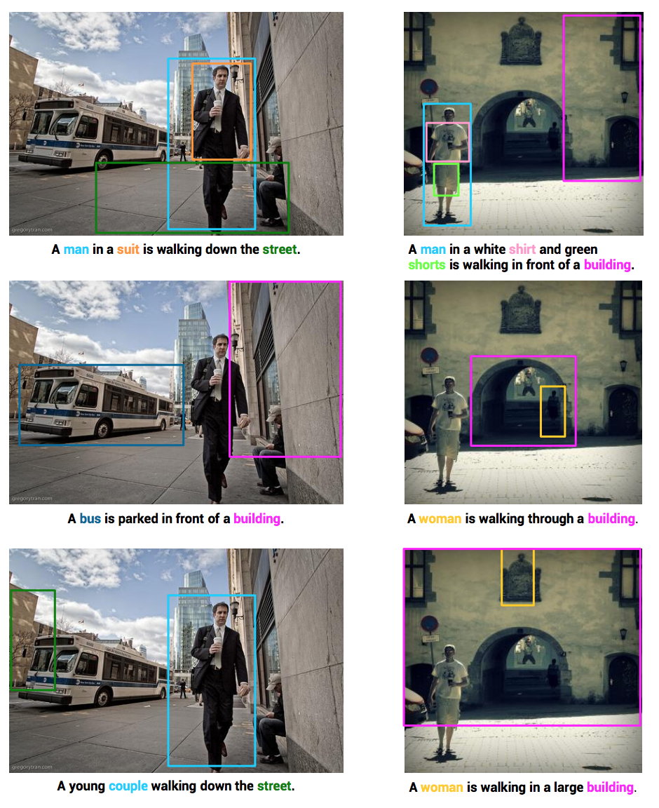
|
Comprehensive Image Captioning via Scene Graph Decomposition
Yiwu Zhong*,
Liwei Wang,
Jianshu Chen,
Dong Yu,
Yin Li
ECCV, 2020 Code
|
|
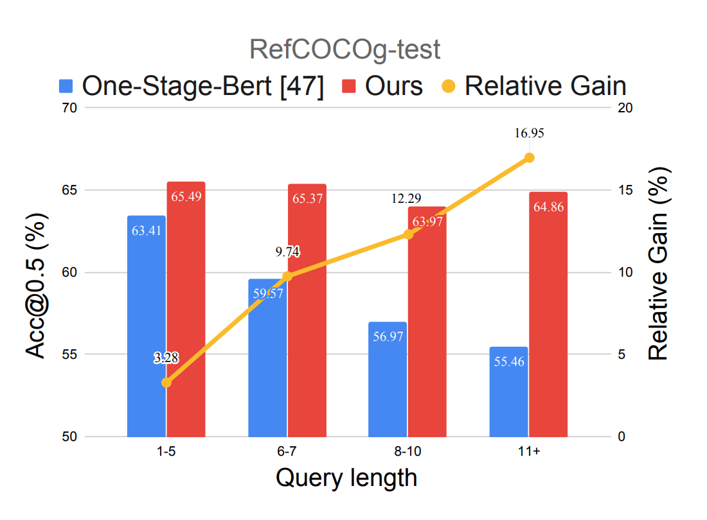
|
Improving One-stage Visual Grounding by Recursive Sub-query Construction
Zhengyuan Yang,
Tianlang Chen,
Liwei Wang,
Jiebo Luo
ECCV, 2020 Code
|
|
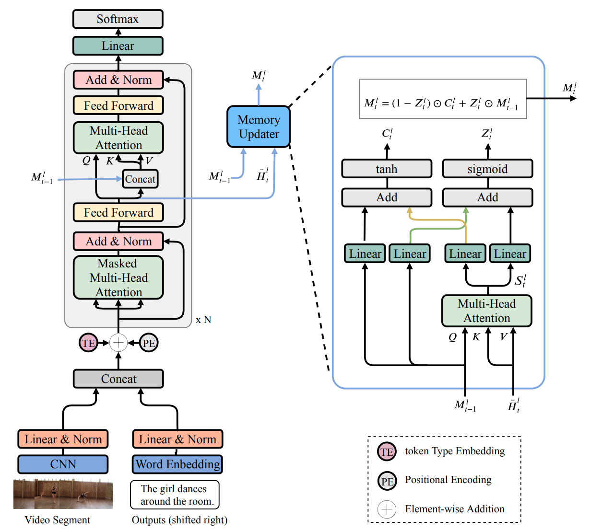
|
MART: Memory-Augmented Recurrent Transformer for Coherent Video Paragraph Captioning
Jie Lei*,
Liwei Wang,
Yelong Shen,
Dong Yu,
Tamara Berg,
Mohit Bansal
ACL, 2020 Code
|
|
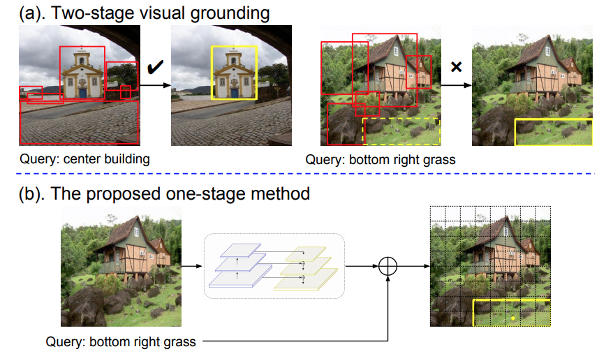
|
A Fast and Accurate One-Stage Approach to Visual Grounding
Zhengyuan Yang*,
Boqing Gong,
Liwei Wang,
Wenbing Huang,
Dong Yu,
Jiebo Luo
ICCV, 2019, Oral Presentation Code
|
|
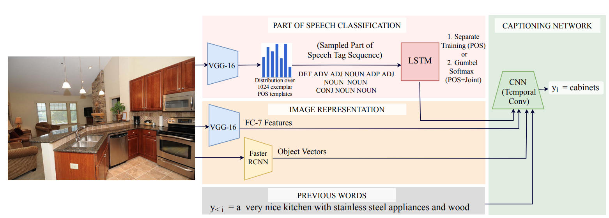
|
Fast, Diverse and Accurate Image Captioning Guided By Part-of-Speech
Aditya Deshpande,
Jyoti Aneja,
Liwei Wang,
Alexander Schwing,
D. A. Forsyth
CVPR, 2019, Oral Presentation
|
|
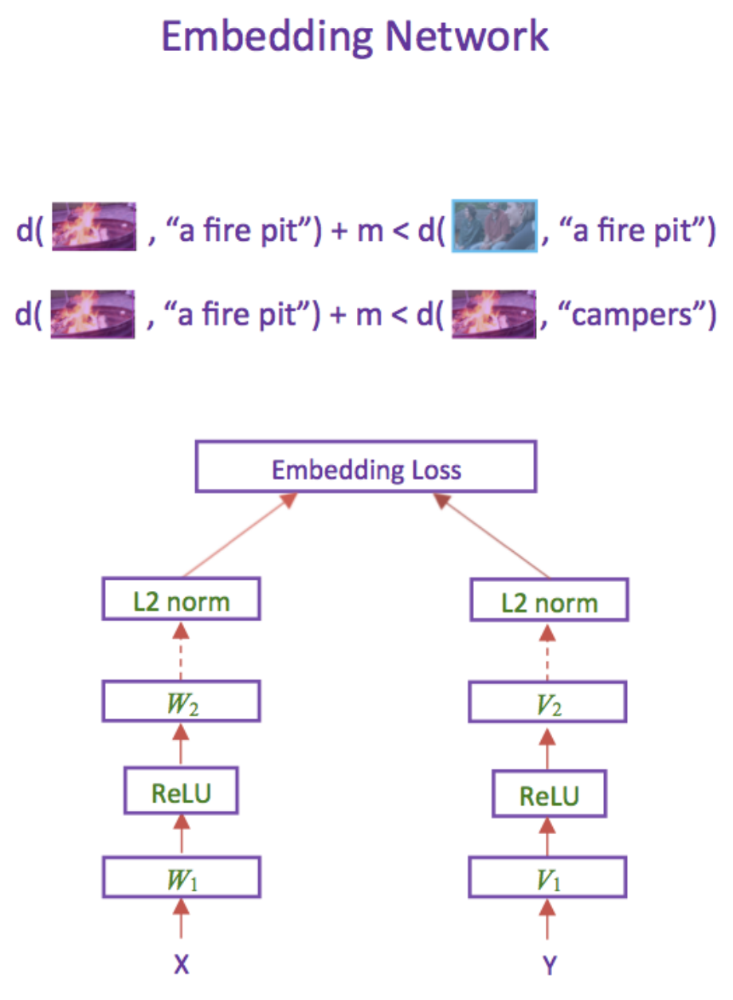
|
Learning Two-Branch Neural Networks for Image-Text Matching Tasks
Liwei Wang,
Yin Li,
Jing Huang,
Svetlana Lazebnik
TPAMI, 2018 Code
|
|
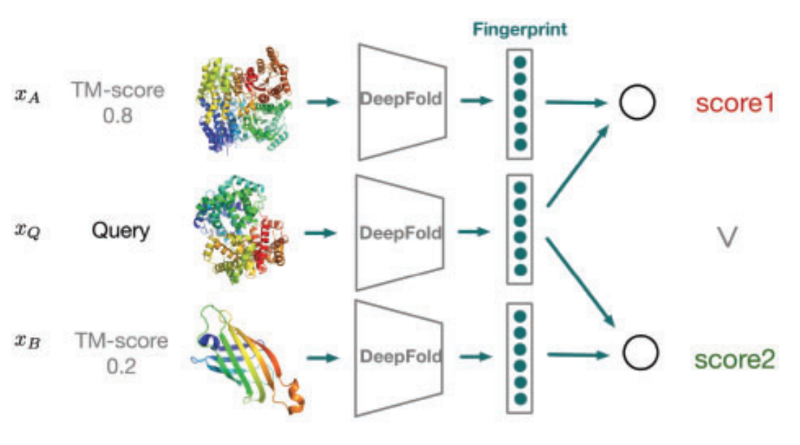
|
Learning structural motif representations for efficient protein structure search
Yang Liu,
Qing Ye,
Liwei Wang,
Jian Peng
Bioinformatics, 2018 Code
|
|
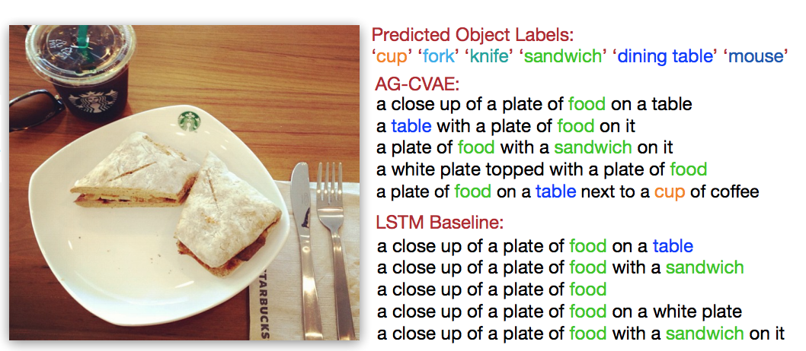
|
Diverse and Accurate Image Description Using a Variational Auto-Encoder with an Additive Gaussian Encoding Space
Liwei Wang,
Alex Schwing,
Svetlana Lazebnik
NeurIPS, 2017
|
|
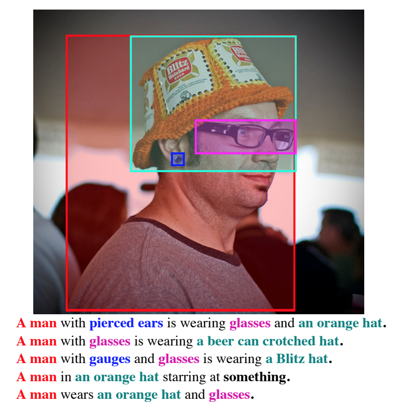
|
Flickr30k Entities: Collecting Region-to-Phrase Correspondences for Richer Image-to-Sentence Models
Bryan Plummer,
Liwei Wang,
Chris M. Cervantes,
Juan C. Caicedo,
Julia Hockenmaier,
Svetlana Lazebnik
IJCV, 2016 Project
|
|
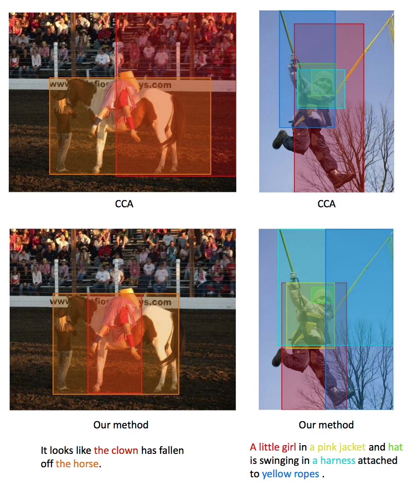
|
Learning Deep Structure-Preserving Image-Text Embeddings
Liwei Wang,
Yin Li,
Svetlana Lazebnik
CVPR, 2016 Code
|
|
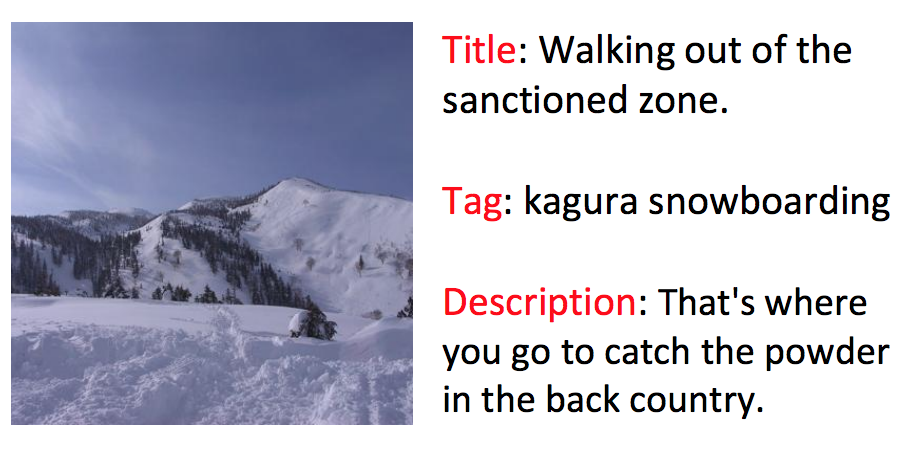
|
Improving Image-Sentence Embeddings Using Large Weakly Annotated Photo Collections
Yunchao Gong,
Liwei Wang,
Micah Hodosh,
Julia Hockenmaier2
Svetlana Lazebnik
ECCV, 2014 Code
|
|
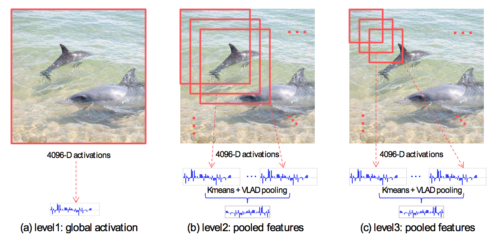
|
Multi-Scale Orderless Pooling of Deep Convolutional Activation Features
Yunchao Gong,
Liwei Wang,
Ruiqi Guo,
Svetlana Lazebnik
ECCV, 2014 Code
|
|
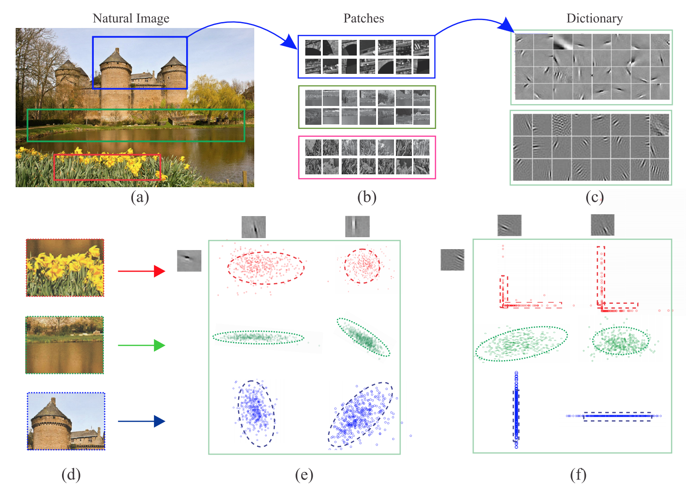
|
Learning Sparse Covariance Patterns for Natural Scenes
Liwei Wang,
Yin Li,
Jiaya Jia,
Jian Sun,
David Wipf,
James M. Rehg
CVPR, 2012
|
|
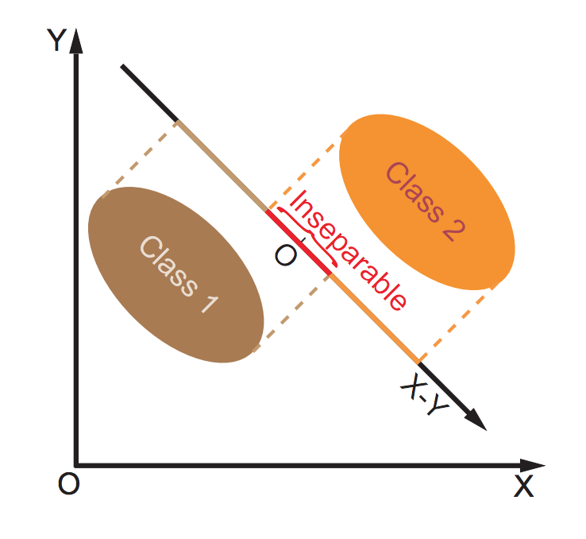
|
Bayesian Face Revisited: A Joint Formulation
Dong Chen,
Xudong Cao,
Liwei Wang,
Fang Wen,
Jian Sun
ECCV, 2012
|
Former Interns and Mentored Students
I'm extremely thankful for working with these excellent interns and mentored students:
Zhengyuan Yang (intern, phd@University of Rochester), Jie Lei (intern, phd@UNC Chapel Hill),
Jeff Zhang (intern, phd@UIUC), Wanyu Du (intern, phd@University of Virginia), Darryl Hanan(intern, phd@UNC Chapel Hill), Yiwu Zhong (intern, phd@University of Wisconsin-Madison), Yifan (intern, phd@UCSD), Yinya (intern, phd@SYSU).
|
|